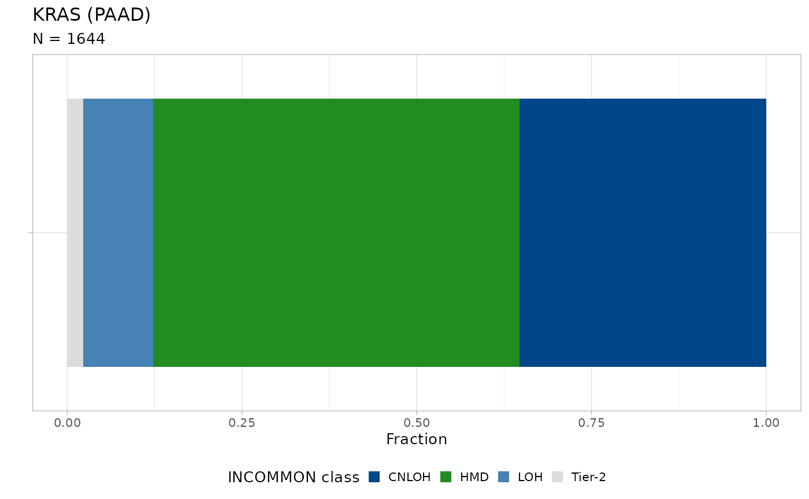
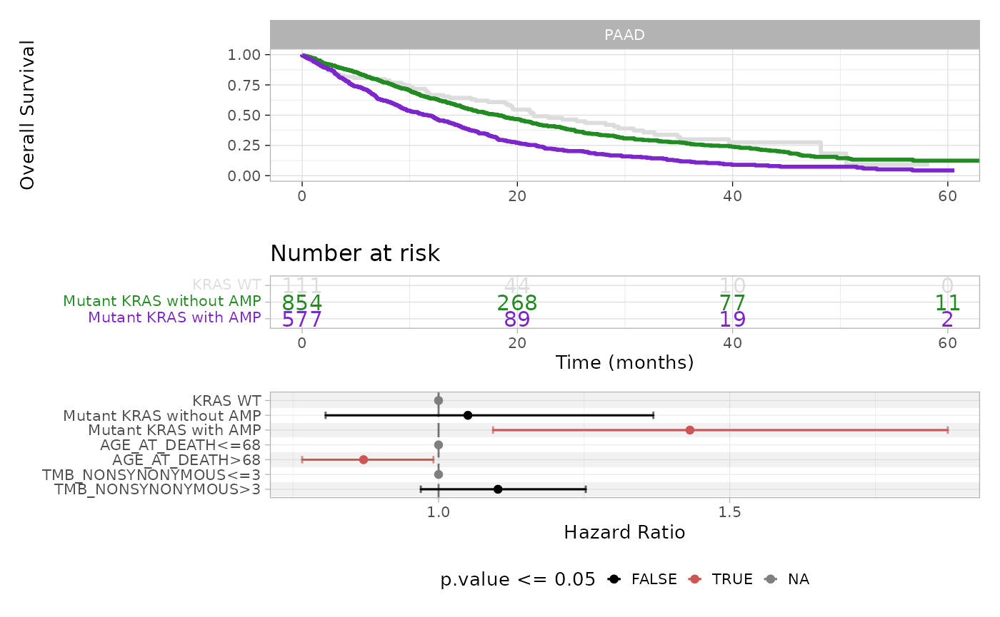

Survival analysis of the MSK-MetTropism Cohort
Source:vignettes/survival_analysis.Rmd
survival_analysis.Rmd
library(INCOMMON)
#> Warning: replacing previous import 'cli::num_ansi_colors' by
#> 'crayon::num_ansi_colors' when loading 'INCOMMON'
library(dplyr)
#>
#> Attaching package: 'dplyr'
#> The following objects are masked from 'package:stats':
#>
#> filter, lag
#> The following objects are masked from 'package:base':
#>
#> intersect, setdiff, setequal, unionIn this example we perform survival analysis using INCOMMON classification of 1742 samples from pancreatic adenocarcinoma (PAAD) patients of the MSK-MetTropsim cohort.
data = data_MSK %>% filter(tumor_type == 'PAAD')
print(data)
#> # A tibble: 7,666 × 25
#> sample tumor_type purity chr from to ref alt gene HGVSp_Short
#> <chr> <chr> <dbl> <chr> <dbl> <dbl> <chr> <chr> <chr> <chr>
#> 1 P-0009446 PAAD 0.1 chr12 2.54e7 2.54e7 C T KRAS p.G12D
#> 2 P-0009446 PAAD 0.1 chr17 7.58e6 7.58e6 C T TP53 p.R248Q
#> 3 P-0021575 PAAD 0.4 chr12 2.54e7 2.54e7 C T KRAS p.G12D
#> 4 P-0021575 PAAD 0.4 chr17 7.57e6 7.57e6 G A TP53 p.R337C
#> 5 P-0021575 PAAD 0.4 chr1 2.71e7 2.71e7 - G ARID… p.M890Hfs*…
#> 6 P-0021575 PAAD 0.4 chr3 1.35e8 1.35e8 C T EPHB1 p.T436I
#> 7 P-0021575 PAAD 0.4 chr1 1.13e7 1.13e7 T C MTOR p.R859G
#> 8 P-0021575 PAAD 0.4 chr3 1.87e8 1.87e8 G A BCL6 p.T476M
#> 9 P-0003412 PAAD 0.2 chr12 2.54e7 2.54e7 C T KRAS p.G12D
#> 10 P-0003412 PAAD 0.2 chr17 7.58e6 7.58e6 C A TP53 p.E224D
#> # ℹ 7,656 more rows
#> # ℹ 15 more variables: NV <int>, DP <int>, VAF <dbl>, SAMPLE_TYPE <chr>,
#> # PRIMARY_SITE <chr>, MET_COUNT <dbl>, MET_SITE_COUNT <dbl>,
#> # METASTATIC_SITE <chr>, SUBTYPE_ABBREVIATION <chr>, GENE_PANEL <chr>,
#> # TMB_NONSYNONYMOUS <dbl>, FGA <dbl>, OS_MONTHS <dbl>, OS_STATUS <dbl>,
#> # AGE_AT_DEATH <dbl>
print(paste0('N samples = ', data$sample %>% unique() %>% length()))
#> [1] "N samples = 1742"First, we classify all the mutations in these samples, exploiting prior knowledge from PCAWG. In order to retrieve groups with a large enough number of patients to achieve statistical significance, we use no cut-off on entropy.
classified_data = lapply((data$sample %>% unique()), function(s){
what = data %>% filter(sample == s)
x = init(
mutations = what,
sample = s,
tumor_type = unique(what$tumor_type),
purity = unique(what$purity),
gene_roles = cancer_gene_census
)
x = classify(
x = x,
priors = pcawg_priors,
entropy_cutoff = 1,
rho = 0.01
)
output = x
return(output)
})Here, we want to estimate the prognostic power of KRAS mutations with
amplification of the mutant allele.
We first look at the distribution of INCOMMON classes across PAAD
samples:
plot_class_fraction(x = classified_data, tumor_type = 'PAAD', gene = 'KRAS')
Nearly 30% of KRAS mutations are associated with amplification of the mutant allele, through CNLOH. Next we stratify PAAD patients as KRAS WT, Mutant KRAS without amplification and Mutant KRAS with amplification, and we fit survival data (overall survival status versus overall survival months) using the Kaplan-Meier estimator.
km_fit = kaplan_meier_fit(x = classified_data, tumor_type = 'PAAD', gene = 'KRAS')
km_fit$fit[[1]]
#> Call: survfit(formula = survival::Surv(OS_MONTHS, OS_STATUS) ~ group,
#> data = data)
#>
#> n events median 0.95LCL 0.95UCL
#> group=KRAS WT 111 63 21.5 19.09 30.8
#> group=Mutant KRAS without AMP 854 512 18.2 16.16 20.3
#> group=Mutant KRAS with AMP 577 397 11.7 9.73 13.1The median survival time decreases from 21.5 months for the KRAS WT group to 18.2 months for Mutant KRAS without amplification and further to 11.7 months for Mutant KRAS with amplification patients.
In order to estimate the hazard ratio associated with these groups, we fit the same survival data, this time using a multivariate Cox proportional hazards regression model. Here, we include the age of patients at death, sex and tumor mutational burden as model covariates.
cox_fit(x = classified_data, tumor_type = 'PAAD', gene = 'KRAS', covariates = c('age', 'sex', 'tmb'))
#> Call:
#> survival::coxph(formula = formula %>% as.formula(), data = x %>%
#> dplyr::mutate(group = factor(group)) %>% dplyr::mutate(group = relevel(group,
#> ref = grep("WT", unique(x$group), value = T))) %>% as.data.frame())
#>
#> coef exp(coef) se(coef) z p
#> groupMutant KRAS with AMP 0.35889 1.43174 0.13749 2.610 0.00905
#> groupMutant KRAS without AMP 0.04916 1.05039 0.13512 0.364 0.71601
#> AGE_AT_DEATH>68 -0.13788 0.87121 0.06582 -2.095 0.03618
#> TMB_NONSYNONYMOUS>3 0.09718 1.10206 0.06539 1.486 0.13725
#>
#> Likelihood ratio test=29.33 on 4 df, p=6.692e-06
#> n= 957, number of events= 957
#> (585 observations deleted due to missingness)This analysis reveals that, whereas KRAS mutation alone (without amplification) is not enough, the presence of amplification significantly increases the hazard ratio (HR = 1.43, p-value = 0.009) with respect to the WT group. Moreover, age seems to play a significant role, as patients younger than 68 (median age) emerge as being more at risk (HR = 0.87, p-value = 0.036) than the older ones.
Kaplan-Meier estimation and multivariate Cox regression can be run and visualized straightforwardly using the following function.
plot_survival_analysis(x = classified_data, tumor_type = 'PAAD', gene = 'KRAS', cox_covariates = c('age', 'sex', 'tmb')) The plot displays Kaplan-Meier survival curves and risk table, and the forest plot for the Cox regression coefficients, where significant covariates are shown in red.